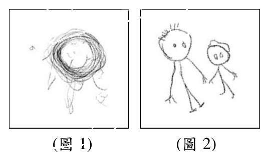

115 年教師檢定幼兒園・學習者發展與適性輔導試題與答案
這一頁是民國 115 年教師檢定幼兒園・學習者發展與適性輔導的整份歷屆試題，共 25 題，題目與標準答案出自教育部教師資格考試歷屆試題（受託國立臺灣師範大學心理與教育測驗研究發展中心），其中 25 題附有詳解。以下逐題列出題幹、選項與答案；要計時作答或記錄成績，請用線上練習。
教育部原始場次代碼：tqa11510
線上作答這一科 →
全部 25 題
第 1 題
小康一邊拼圖一邊低聲說:「先找同樣的顏色……這一片不對……再換一片。」老師走近時,小康仍持續喃喃自語的拼拼圖。根據維高斯基(L. Vygotsky)的觀點,下列老師的做法,何者較為適切?
- （A）小康尚未具備有效的問題解決能力,老師應立即提供口語引導
- （B）小康過度依賴外顯語言,老師應引導其逐步減少喃喃自語行為
- （C）小康可能因為喃喃自語而分散注意力,老師應提醒其專心拼圖
- （D）小康正在運用自我引導的語言策略,老師應暫時觀察而不介入
答案：（D）
詳解與考點
正解：小康一邊操作拼圖一邊喃喃自語，說出解題步驟（「先找同樣的顏色……這一片不對……再換一片」），這正是維高斯基所稱的私語（private speech）：幼兒藉由外顯的自言自語組織思考、自我調節並引導解決問題的歷程，是幼兒認知發展中正常且有益的現象，日後將逐漸內化為無聲的內在語言。教師見狀應暫時在旁觀察，不打斷幼兒正在進行中的自我引導歷程，故選（D）。
A：（A）主張老師應立即提供口語引導，誤把私語當作幼兒問題解決能力不足的表現。事實上私語正顯示小康正主動運用語言策略引導自己解題，貿然介入反而會打斷其自我調節的思考歷程。
B：（B）主張老師應引導小康逐步減少喃喃自語行為，誤認私語是應被消除的依賴行為。依維高斯基的觀點，私語是語言由外顯逐漸內化為內在思考工具的必經發展階段，並非需要矯正或減少的不良習慣。
C：（C）主張老師應提醒小康專心拼圖，誤判私語會分散幼兒注意力。實際上私語正是協助小康維持專注、組織解題步驟的策略，貿然提醒或打斷，反而可能干擾其正在進行的思考歷程。
本題考點：維高斯基（Vygotsky）的私語（private speech）理論。私語是幼兒將外在對話逐漸內化為內在思考語言的過程中的過渡現象，具有自我調節與引導問題解決的功能；教師面對幼兒私語時應予以尊重、在旁觀察而非隨意打斷或矯正。
第 2 題
小安經常在教室中橫衝直撞碰倒桌椅,下列老師的回應,何者較符合「我訊息」(I-message)的原則?
- （A）「我已經說過很多次了喔!再跑你會受傷喔!」
- （B）「你在教室又衝又跑,我擔心你會受傷,請你用走的。」
- （C）「我生氣了喔!你不記得和我的約定嗎?在教室中要怎樣?」
- （D）「你很愛用衝的跑的,我覺得這是不可以的行為,請你用走的。」
答案：（B）
詳解與考點
正解：「我訊息」的完整結構是：客觀描述具體行為→表達自身感受→提出具體請求，且不對當事人做人身評價或指責。選項（B）「你在教室又衝又跑，我擔心你會受傷，請你用走的」依序做到了描述行為、表達感受、提出請求，完整符合我訊息的結構，故選（B）。
A：「我已經說過很多次了喔！再跑你會受傷喔！」偏向重複告誡與警告的語氣，並未清楚表達教師自身的感受，語句仍帶有指責、翻舊帳的意味，不符合我訊息強調當下感受表達的原則。
C：「我生氣了喔！你不記得和我的約定嗎？在教室中要怎樣？」雖以「我生氣了」開頭表達情緒，但隨即反問質疑幼兒是否遵守約定，帶有責備、質問的語氣，實質上仍是聚焦於指責對方「你」的行為，屬「你訊息」的變形。
D：「你很愛用衝的跑的，我覺得這是不可以的行為，請你用走的」以「你很愛用衝的跑的」為開頭，對幼兒的行為傾向貼上負面標籤、做出人格化的評價，屬於評價幼兒行為模式的「你訊息」，即使後面接了請求，開頭的指責性描述已違背我訊息不評價人身的原則。
本題考點：溝通分析中的「我訊息」與「你訊息」。我訊息聚焦於「描述行為＋表達感受＋提出請求」，避免對他人做評價或貼標籤；你訊息則常見於指責、質問、貼標籤等語句，關鍵差異在於語句是否聚焦於說話者自身的感受與需求，而非對聽者的評價。
第 3 題
戶外教學時,小志在科博館看到某個不認識的動物標本,轉身想問老師時,因為看見老師害怕的樣子,隨即快步走開不敢在標本前停留。下列何者較能解釋小志的表現?
- （A）去習慣化(dishabituation)
- （B）社會參照(social referencing)
- （C）刺激區辨(stimulus discrimination)
- （D）系統減敏(systematic desensitization)
答案：（B）
詳解與考點
正解：小志面對陌生、不確定的動物標本，情境本身模稜兩可，此時他轉頭觀察老師（重要他人）的情緒反應——看見老師露出害怕的表情，便據以判斷該標本是危險或應迴避的對象，進而調整自己的行為（快步走開、不敢停留）。這正是「社會參照」（social referencing）的典型表現：幼兒在情境模糊不明、自己無法直接判斷時，會參考重要他人的情緒反應，作為判斷情境安全與否並據以調整行為的依據，故選B。
A：「去習慣化」指個體對某個刺激原本已因重複出現而不再產生反應（習慣化），卻因新的、不同的刺激出現而重新引發反應；本題情境中小志對動物標本本來就沒有習慣化的歷程，也沒有新刺激讓已消退的反應重新出現，與去習慣化的機制不符。
C：「刺激區辨」指個體能分辨不同的刺激，並對相似但不同的刺激給予不同的反應；本題重點在於小志參照了老師的情緒訊息來決定行為，而非在辨別動物標本與其他刺激之間的異同，與刺激區辨的機制不符。
D：「系統減敏」是行為治療中透過漸進式暴露搭配放鬆訓練，逐步降低個體對特定刺激之恐懼反應的治療技術；本題並未出現漸進暴露、放鬆訓練或治療歷程，小志的反應是單次情境中參照他人情緒後的立即行為調整，並非系統減敏的操作。
本題考點：社會參照（social referencing）。指幼兒在情境曖昧不明、自身無法判斷利害時，會觀察並依循重要他人（如照顧者、老師）的情緒表現，來決定自己對該情境的解讀與因應行為，是幼兒情緒與社會認知發展的重要機制，須與去習慣化、刺激區辨、系統減敏等其他學習或治療概念區辨。
第 4 題
每次在美勞區完成作品後,小星都將作品放在展示檯上晾乾、清理桌面,洗完手再把工作服脫下來掛在掛鈎上。小星的行為反映下列何種記憶?
- （A）腳本記憶
- （B）語意記憶
- （C）策略記憶
- （D）自傳記憶
答案：（A）
詳解與考點
正解：小星每次完成作品後，固定依序執行晾乾作品、清理桌面、洗手、掛工作服等一連串例行步驟，這種對特定情境下固定行為順序的記憶，即為腳本記憶，是幼兒對日常生活中反覆發生的事件流程所形成的組織化記憶基模，讓幼兒能預期並自動執行熟悉情境中的一系列動作，故選A。
B：語意記憶指對事實、概念、詞彙意義等一般性知識的記憶（如知道蘋果是水果），並非針對特定情境下的行為流程順序，與題幹描述的例行程序不符。
C：策略記憶指運用特定方法（如複誦、分類、聯想）以幫助記憶或提取訊息的能力，本題描述的是小星對整理流程的執行，並未涉及記憶輔助策略的運用。
D：自傳記憶指對個人生活中特定、具體、僅發生一次的事件之記憶（如上次去動物園），而小星的行為是每次美勞活動後都重複發生的例行程序，具有規律性與重複性，並非單一事件的個人經驗回憶，故不符合。
本題考點：腳本記憶（script memory）與其他記憶類型的區分。腳本記憶是幼兒對重複發生之情境事件流程所形成的組織化知識架構，屬程序性、情境性的記憶基模；須與語意記憶（一般知識）、策略記憶（記憶輔助方法）、自傳記憶（個人特定事件）等概念區分。
第 5 題
幼兒園進行火災逃生演練,情境設定為教室內電線走火,大量易燃物品引起火勢快速蔓延。下列做法何者不適切?
- （A）幼兒穿鞋並迅速至走廊集合
- （B）幼兒將手帕沾水後掩住口鼻向外逃生
- （C）幼兒逃生時遵守不語、不跑、不推三原則
- （D）幼兒至安全疏散地點集合後教師清點人數並回報
答案：（A）
詳解與考點
正解：題幹設定為「教室內電線走火，大量易燃物品引起火勢快速蔓延」，屬火勢猛烈、蔓延迅速的緊急情境，逃生原則應是儘速脫離建築物、前往真正安全的戶外疏散地點，把握黃金逃生時間；「幼兒穿鞋並迅速至走廊集合」的做法有兩個問題：走廊仍位於建築物內部，並非火勢快速蔓延情境下真正安全的集合地點，且逃生當下為了穿鞋而停留、耽誤時間，違反爭取時間儘速逃離的原則，故（A）為不適切做法，即本題答案。
B：（B）幼兒將手帕沾水後掩住口鼻向外逃生，是正確的逃生作為，沾濕的手帕可過濾部分濃煙微粒、減少嗆傷與吸入性嗆傷的風險，同時仍持續向外逃生而不停留，符合逃生要領。
C：（C）幼兒逃生時遵守不語、不跑、不推三原則，是幼兒園逃生演練的標準原則，安靜行進可避免恐慌喧嘩延誤反應、不奔跑不推擠可避免跌倒受傷或造成逃生動線壅塞，屬正確作法。
D：（D）幼兒至安全疏散地點集合後教師清點人數並回報，是確認全員安全到齊、及時發現是否有幼兒受困或走失的必要程序，也是逃生演練不可省略的最後一步，屬正確作法。
本題考點：幼兒園火災逃生演練的黃金原則。火勢快速蔓延時應以「儘速逃離至戶外真正安全地點」為最高優先，不因整裝（如穿鞋）而延誤，並輔以掩口鼻防嗆、不語不跑不推、疏散後清點人數等配套措施，共同構成完整的逃生程序。
第 6 題
下列哪位幼兒在象徵性遊戲的發展較為成熟?
- （A）美美拿空寶特瓶,餵著洋娃娃說:「快快喝快快長大」
- （B）阿珍拿著玩具手機,放在耳朵旁邊小聲說:「喂喂喂」
- （C）小金推著椅子在走廊上來回走動,一面說:「嘟嘟嘟」
- （D）華華展開雙臂並發出呼呼聲說:「飛呀飛呀風好大!」
答案：（D）
詳解與考點
正解：象徵性遊戲的發展會從仰賴外形相似的替代物，逐漸邁向完全脫離實物、僅憑肢體動作與語言即可表徵不在場事物，脫離實物的程度愈高，代表抽象表徵能力愈成熟。D華華不使用任何道具，僅展開雙臂、發出呼呼聲並喊著「飛呀飛呀風好大」，即表徵「飛翔」情境，完全憑想像力創造情境，抽象轉化層次最高，故選（D）。
A：美美以空寶特瓶替代奶瓶餵洋娃娃，屬以外形相近之物（瓶身、瓶口）替代真實物品（奶瓶）的遊戲，仍需藉助具體道具支撐表徵，抽象程度較低。
B：阿珍拿玩具電話模擬講電話，玩具電話本身已高度近似真實電話的外形與功能，替代與想像轉化程度較低，僅是操作與真實物極相似的替代物。
C：小金推椅子模擬交通工具移動，同樣以外形（可移動的物體）替代交通工具，仍需藉助與原物有共通特徵（可移動）的道具，抽象轉化程度不及D。
本題考點：象徵性遊戲（symbolic play）的發展層次。其成熟度可依表徵所需道具與實物的相似程度區分：由「高度相似替代物」（如玩具電話）到「低相似度替代物」（如寶特瓶、椅子），再到「完全脫離實物、純憑肢體與語言表徵」，程度愈脫離具體物，代表幼兒的抽象表徵與想像能力愈成熟。
第 7 題
團體討論時,老師請阿勇協助懸掛海報。阿勇先站在白板前拉平海報,再回頭看看其他幼兒就立刻蹲下。阿勇蹲下的行為反映下列何種能力?
- （A）保留能力(conservation)
- （B）直覺思考(intuitive thought)
- （C）觀點取替(perspective taking)
- （D）遞移推論(transitive inference)
答案：（C）
詳解與考點
正解：阿勇先站在白板前拉平海報，接著回頭確認其他幼兒是否能看見，發現自己擋住視線後隨即蹲下，顯示阿勇能跳脫自己當下的視角，理解其他幼兒此刻所能看到的畫面與自己不同，進而調整自身動作以配合他人的視覺角度，這正是「觀點取替」（perspective taking）能力的展現，故選（C）。
A：保留能力（conservation）指理解物體在外觀（形狀、排列）改變後，其數量、重量等本質屬性維持不變的能力，例如水倒入不同形狀容器後量不變；與阿勇調整自身位置以配合他人視角無關。
B：直覺思考（intuitive thought）是皮亞傑用以描述前運思期幼兒僅憑表面知覺印象、未經邏輯推理即下判斷的思考型態（如僅憑外觀高低判斷數量多寡），與本題所示「覺察他人視角並主動調整行為」的能力不同。
D：遞移推論（transitive inference）指根據已知的兩個關係（如A>B、B>C）推論出第三者間的關係（A>C）的邏輯能力，屬於具體運思期的邏輯運算能力，與本題情境中的視角覺察無關。
本題考點：皮亞傑認知發展論中的自我中心（egocentrism）與觀點取替（perspective taking）。觀點取替指個體能理解他人所處位置或立場與自己不同、進而覺察他人的知覺或想法，是幼兒逐漸脫離自我中心思考的重要指標；常與保留概念、直覺思考、遞移推論等前運思期／具體運思期概念並列辨析。
第 8 題
阿德勒(A. Adler)心理學強調要給予幼兒鼓勵而非讚美,下列何者是鼓勵的用語?
- （A）「你表現得真棒!」
- （B）「你跑步第一名好厲害,我為你開心!」
- （C）「我看到你很認真的沿著線慢慢剪,把圖形剪得很漂亮喔!」
- （D）「全班只有你認真做自己的事情,你最乖了,老師等一下跟你媽媽說。」
答案：（C）
詳解與考點
正解：阿德勒心理學主張教師應給予幼兒「鼓勵」而非「讚美」，鼓勵聚焦於幼兒具體投入的努力歷程與實際行為表現本身，不涉及與他人比較、籠統評價或外部增強。C「我看到你很認真的沿著線慢慢剪，把圖形剪得很漂亮喔」具體描述幼兒剪紙時專注、努力的歷程及實際完成的成果，讓幼兒感受到自身的付出被看見，屬典型的鼓勵用語，故選C。
A：「你表現得真棒！」僅是空泛、籠統的整體評價，未具體指出幼兒做了什麼、如何努力，聽者難以知道自己究竟哪個行為受到肯定，屬缺乏具體內容的讚美。
B：「你跑步第一名好厲害，我為你開心！」聚焦與他人比較後的名次結果，強化的是「贏過別人」而非努力本身，容易讓幼兒將自我價值建立在與他人競爭勝出之上，屬結果與比較導向的讚美。
D：「全班只有你認真做自己的事情，你最乖了，老師等一下跟你媽媽說」同時涉及與同儕比較、貼上評價標籤、並訴諸告知家長作為外在增強手段，三者皆違反阿德勒鼓勵不比較、不貼標籤、不假外力的原則，是最典型的讚美（甚至操弄）用語。
本題考點：阿德勒學派的鼓勵與讚美之辨。鼓勵著重描述具體努力歷程、不做比較評價，目的在培養內在動機與自我價值感；讚美則多聚焦結果、籠統評語、與他人比較或訴諸外在增強，容易使幼兒依賴他人評價而非自我肯定。
第 9 題
老師發現中班的小華因為手指力道不足,無法順利用剪刀剪出弧形。為促進小華該能力的發展,下列老師提供給小華的任務,何者較為適切?
- （A）提供手指捏夾串珠的活動
- （B）練習站立投球進籃的活動
- （C）練習拿鉛筆在方格中寫字
- （D）使用剪刀依線條剪出圓形
答案：（A）
詳解與考點
正解：小華的困難根源在於「手指力道不足」，這是精細動作發展中手指小肌肉肌力與控制力尚未成熟的問題，要促進其剪出弧形的能力，應先從強化手指本身的力量與靈巧度著手。選項A「提供手指捏夾串珠的活動」讓幼兒反覆以拇指與食指等指尖捏取、夾持細小物件，直接鍛鍊手指小肌肉的力量與精細操控能力，是針對根本原因設計的先備練習，故選A。
B：站立投球進籃屬大肌肉動作（gross motor），使用的是手臂、肩膀與軀幹的力量與協調，與手指小肌肉的精細動作發展分屬不同的動作系統，對改善手指力道不足並無直接助益，故不選。
C：拿鉛筆在方格中寫字雖屬精細動作範疇，但書寫時手指的握姿（三指抓握）、施力方向與運筆節奏，與操作剪刀時手指開合、施加剪切力的動作模式並不相同，練習書寫無法直接遷移為剪刀所需的手指力量，故不選。
D：使用剪刀依線條剪出圓形，正是小華目前因手指力道不足而難以完成的目標任務本身。在基礎肌力尚未建立之前，直接要求幼兒反覆挑戰有難度的目標任務，容易因持續失敗而造成挫折，應先透過捏夾等基礎活動累積力量與手感，待能力提升後再回頭練習剪弧形，故不選。
本題考點：幼兒精細動作發展的分解教學原則。精細動作（fine motor）涉及手指小肌肉的力量、靈巧度與手眼協調，操作剪刀屬於此範疇中難度較高的複合技能；教學上應先辨識能力不足的根本環節（如手指肌力），透過捏、夾、揉、撕等基礎活動由簡入繁地搭建先備能力，而非直接反覆練習學生尚無法完成的目標動作。
第 10 題
某幼兒園出現數起腸病毒個案,下列哪些措施較為適切? 甲、將口腔有無水泡作為腸病毒的判定標準,以落實「生病不上學」的防疫觀念 乙、若對使用漂白水消毒有安全疑慮者,可用75%酒精替代 丙、減少班級間的交流活動,直到無新病例發生為止 丁、養成教保服務人員及幼兒洗手習慣 戊、應用衛教宣導單,提供家長腸病毒的預防及照護方法
- （A）甲乙丁
- （B）甲丁戊
- （C）乙丙戊
- （D）丙丁戊
答案：（D）
詳解與考點
正解：丙「減少班級間的交流活動，直到無新病例發生為止」可降低跨班傳播風險；丁「養成教保服務人員及幼兒洗手習慣」是預防腸病毒最基本且有效的措施；戊「應用衛教宣導單，提供家長腸病毒的預防及照護方法」有助於強化家長的防疫知能與居家照護能力。丙、丁、戊三項皆為衛生單位建議的合理防疫作為，故選D。
A（甲乙丁）：甲、乙兩項均有誤，故A不成立。甲僅以「口腔有無水泡」作為腸病毒的判定標準，然腸病毒臨床表現多樣，常伴隨發燒、手足丘疹水泡、咽峽炎等症狀，並非僅憑口腔水泡有無即可周全判斷，以此作為「生病不上學」之唯一依據並不周延；乙主張以75%酒精替代漂白水消毒，然腸病毒屬無外套膜（non-enveloped）病毒，一般濃度酒精之消毒效果有限，正確做法應使用稀釋漂白水等經證實有效之方式消毒。
B（甲丁戊）：丁、戊之敘述正確，但甲以「口腔有無水泡」作為判定唯一標準，忽略腸病毒臨床表現多樣（發燒、丘疹水泡、咽峽炎等），並不周延，故B因甲之誤而不成立。
C（乙丙戊）：丙、戊之敘述正確，但乙主張以75%酒精替代漂白水消毒，忽略腸病毒屬無外套膜病毒、一般酒精消毒效果有限之特性，故C因乙之誤而不成立。
本題考點：腸病毒防治的正確衛教觀念──腸病毒臨床表現多樣，不應僅憑單一症狀（如口腔水泡）判定；腸病毒屬無外套膜病毒，消毒須使用稀釋漂白水等有效方式，一般濃度酒精效果有限；日常防疫則以勤洗手、減少群聚交流、加強衛教宣導為核心措施。
第 11 題
小平和阿德在紙上畫圖,老師問小平:「你在畫什麼?」小平說:「我在畫狗狗。」(如圖1) 阿德則邊畫邊說:「爸爸帶我去遊樂園玩。」(如圖2)從繪畫發展的觀點,小平和阿德各處於哪一個階段?

- （A）塗鴉期、圖示期
- （B）塗鴉期、前圖示期
- （C）前圖示期、塗鴉期
- （D）前圖示期、圖示期
答案：（B）
詳解與考點
正解：繪畫發展的判準在幼兒是否僅賦予線條名稱，或已能以圖畫敘說具脈絡的經驗。小平說「我在畫狗狗」，屬命名塗鴉，為塗鴉期；阿德邊畫邊說「爸爸帶我去遊樂園玩」，能表達完整生活事件，屬前圖示期，故選B。
A：（A）阿德已能敘說事件，表現比單純圖示的固定符號更符合前圖示期。
C：（C）把兩人的階段對調；小平是命名塗鴉，阿德才是能表達經驗的前圖示期。
D：（D）小平尚未呈現可辨識的具象描繪，不能判為前圖示期。
本題考點：兒童繪畫發展；命名塗鴉是為線條賦予意義，前圖示期則開始以圖畫表達人物、事件與生活經驗。
第 12 題
在積木區中,小天拿著圓柱體隨意滾動 阿迪坐在旁邊看著奇奇和阿瑋用積木共同蓋一座動物園。根據派頓(M. Parten)的遊戲發展理論,下列敘述何者較為正確?
- （A）阿瑋正在進行合作遊戲
- （B）小天正在進行建構遊戲
- （C）阿迪與奇奇正在進行聯合遊戲
- （D）阿迪的遊戲發展層次較阿瑋高
答案：（A）
詳解與考點
正解：依派頓（M. Parten）遊戲發展理論，社會性遊戲層次由低至高依序為無所事事、旁觀、單獨遊戲、平行遊戲、聯合遊戲、合作遊戲。奇奇與阿瑋共同合力搭建同一座動物園，兩人朝共同目標分工協作、共享素材與成果，符合合作遊戲（有共同目標、角色或分工的協同遊戲）的定義，故（A）「阿瑋正在進行合作遊戲」正確，選A。
B：小天僅隨意滾動圓柱體積木，並未依計畫組合、堆疊或建造出特定造型或結構，屬於缺乏建構目的之單純功能性操作（重複性感官動作遊戲），並非以組合、建造成品為目標的建構遊戲。
C：阿迪僅坐在一旁看著奇奇與阿瑋遊戲，並未實際加入互動、共享素材或進行任何操作，這是派頓理論中的「旁觀行為（onlooker behavior）」，其特徵正是「觀看但不參與」；聯合遊戲則要求幼兒實際加入、彼此有互動與素材共享，兩者不可混淆。
D：依派頓理論的層次排序，旁觀行為的社會性層次低於合作遊戲；阿迪僅止於旁觀、未實際參與遊戲，其遊戲發展層次應低於正在進行合作遊戲的阿瑋，而非阿迪較高，故此敘述方向相反。
本題考點：派頓（M. Parten）社會性遊戲發展的六個層次。由低至高依序為無所事事、旁觀、單獨遊戲、平行遊戲、聯合遊戲、合作遊戲；作答關鍵在辨認幼兒是否實際參與互動（區分旁觀與聯合／合作）、是否有共同目標與分工（區分聯合與合作），並依此判斷各角色所處的層次高低。
第 13 題
老師在桌上放了五顆鈕扣,請幼兒計數(counting)。小宜用手依序指著每顆鈕扣說:「1、2、3、4、5,總共有5顆。」小宜的表現符合下列哪些計數原則? 甲、基數原則(the cardinal principle) 乙、抽象原則(the abstraction principle) 丙、加總原則(the addition principle) 丁、一一對應原則(the one-to-one principle)
- （A）甲丙
- （B）甲丁
- （C）乙丙
- （D）乙丁
答案：（B）
詳解與考點
正解：小宜以手依序指著每一顆鈕扣、口中依序唸出對應數字「1、2、3、4、5」，顯示她能將每個鈕扣與唯一一個數詞一一配對、不重複也不遺漏，符合丁「一一對應原則（the one-to-one principle）」；數畢後說出「總共有5顆」，顯示她理解最後唸出的數詞即代表整組物品的總數量，符合甲「基數原則（the cardinal principle）」；兩者皆展現，正確組合為甲丁，選（B）。
A、C：甲丙、乙丙兩組合皆含丙「加總原則」，但蓋爾曼（Gelman）與蓋利斯特（Gallistel）提出的計數核心原則為固定順序原則、一一對應原則、基數原則、抽象原則、次序無關原則，並無「加總原則」一項；本題也未涉及數量相加的運算情境，故含丙的組合皆不成立。
D：乙丁組合含乙「抽象原則」，該原則指計數的方法可適用於任何種類的物品，本題僅呈現小宜對同一堆鈕扣的計數過程，並未展現她能將計數程序類推至其他類別物品，未能證實抽象原則，故乙丁不選。
本題考點：Gelman與Gallistel提出的計數（counting）核心原則，包括固定順序原則（數詞順序固定）、一一對應原則（物與數詞一對一配對）、基數原則（最後一個數詞代表總數）、抽象原則（原則可套用於任何物品類別）、次序無關原則（計數順序不影響結果）；解題須逐一比對題幹描述的行為對應到哪些原則，並留意選項中是否混入非正式原則的干擾詞。
第 14 題
老師想分別觀察「小嘉咬手指行為的次數」以及「平平爭奪玩具的行為」,下列哪二種觀察方法較適切?
- （A）評定量表法(rating scales)、事件取樣法(event sampling)
- （B）評定量表法(rating scales)、軼事記錄法(anecdotal record)
- （C）時間取樣法(time sampling)、事件取樣法(event sampling)
- （D）時間取樣法(time sampling)、軼事記錄法(anecdotal record)
答案：（C）
詳解與考點
正解：觀察方法的選擇需依行為特性而定。「小嘉咬手指行為的次數」屬於高頻率、持續性、不易逐次精確計數的行為，適合以時間取樣法（time sampling）在固定時距內反覆記錄行為是否出現，藉由多次時距的抽樣結果推估其發生頻率；「平平爭奪玩具的行為」則屬偶發性、非預期出現的特定事件，適合以事件取樣法（event sampling）於事件發生當下完整記錄前因、行為與後果，掌握其來龍去脈與發生次數。兩種行為性質不同、對應方法亦不同，正確組合為時間取樣法加事件取樣法，故選（C）。
A：（A）評定量表法（rating scales）是依量表對行為特質或表現程度做整體評定，屬主觀等級評估，無法逐次或逐時距記錄具體行為的出現與否，不適用於這兩種觀察目的。
B：（B）評定量表法同A之理由不適用；軼事記錄法（anecdotal record）以敘事方式記下印象深刻的偶發事件，雖可捕捉特殊行為片段的脈絡，卻缺乏系統性的時距或事件抽樣架構，難以呈現「次數」這類量化資料，故不是最適切的選擇。
D：（D）時間取樣法用於咬手指行為合理，但軼事記錄法用於爭奪玩具行為僅能記下單次事件的敘事描述，無法像事件取樣法一樣系統性地在每次事件發生時依固定格式記錄前因後果，系統性與可比較性較弱。
本題考點：幼兒行為觀察法的適用情境判斷。時間取樣法適用於高頻率、持續性行為的頻率估計；事件取樣法適用於偶發性、特定事件的完整脈絡記錄；評定量表法適用於行為程度的整體評定；軼事記錄法適用於捕捉印象深刻但非系統性抽樣的偶發事件。解題步驟是先判斷行為的頻率與性質，再選擇對應的系統觀察方法。
第 15 題
阿文在扮演遊戲中想當超商收銀員,但被分配扮演客人後,出現扁嘴、眼眶泛紅的表情。小奇看到後立即對阿文說:「你看起來很難過,是不是因為超商裡沒有你想要買的玩具?」下列哪一項敘述較能反映小奇對阿文的情緒理解?
- （A）小奇對阿文的情緒理解未展現出同理能力(empathy)
- （B）小奇對阿文的情緒理解有錯誤的歸因(misattribution)
- （C）小奇對情緒理解的自我覺察(self-awareness)能力不足
- （D）小奇運用社會參照(social referencing)理解阿文的情緒
答案：（B）
詳解與考點
正解：阿文因為想扮演超商收銀員、卻被分配演客人，角色期待落空而出現扁嘴、眼眶泛紅的難過表情，其真正的情緒來源是「角色分配不如己意」。小奇雖然察覺到阿文的難過並主動表達關心，展現出試圖理解對方感受的意圖，但他把難過的原因解讀成「超商裡沒有想買的玩具」，這個推測與阿文情緒的真正成因並不相符，屬於對他人情緒成因的錯誤解讀，也就是錯誤歸因（misattribution），故選（B）。
A：「未展現出同理能力」與情境不符，小奇確實有主動關懷阿文、嘗試揣摩並說出對方感受的行為，這正是同理心的表現形式之一，只是他對「難過原因」的推測有誤，不能因此判定他完全缺乏同理能力。
C：自我覺察（self-awareness）指個體對「自身」情緒狀態、想法與感受的認知與監控，而本題描述的是小奇對「阿文」情緒的理解與歸因，兩者對象不同，與小奇解讀他人情緒原因錯誤的情境無關。
D：社會參照（social referencing）指個體在情境曖昧不明、難以自行判斷時，觀察並依循他人的情緒反應來決定自己該如何解讀情境或行動；本題中是小奇主動對阿文的情緒表現提出因果解讀，並非阿文在參照他人反應決定自己的情緒或行為，情境設定不符。
本題考點：情緒理解中的錯誤歸因（misattribution）與同理心（empathy）的區辨。同理心關注是否有意願與行動去理解、回應他人感受；歸因正確與否則是理解過程中認知推論的品質問題，兩者可各自獨立成立或不成立，判斷時須先確認情緒的真正成因，再比對推測是否吻合。
第 16 題
幼兒園進行紅白兩隊拔河比賽,紅隊的小韓輸了,看著拿到冠軍盃的白隊,皺著眉頭說:「那個獎盃看起來一點都不厲害,我才不想要。」小韓的反應較可能屬於下列哪一種防衛機制?
- （A）否認(denial)
- （B）投射(projection)
- （C）合理化(rationalization)
- （D）替代作用(displacement)
答案：（C）
詳解與考點
正解：小韓輸掉拔河比賽、無法獲得獎盃後，轉而貶低獎盃本身的價值，宣稱「一點都不厲害，我才不想要」，這是典型的「酸葡萄」心理——為緩解得不到某事物所產生的挫折感，編造理由貶低該事物或合理化自己未能獲得它的處境，屬於防衛機制中的合理化（rationalization），故選C。
A：否認是指拒絕承認已發生的事實，例如小韓堅持自己並沒有輸掉比賽；但小韓的反應是承認自己輸了（看著白隊拿冠軍盃），只是轉而貶低獎盃的價值，並未否認輸的事實本身，與否認機制不符。
B：投射是把自己內在不能接受的情緒、想法或衝動，轉嫁到他人身上，例如小韓認為是白隊使用不正當手段才贏、或認為是別人在嫉妒自己；小韓的反應並未涉及把負面情緒歸咎於他人，而是直接針對獎盃本身進行貶低，不屬投射。
D：替代作用是將對某對象的情緒轉移發洩到另一個較安全、無關的對象上，例如小韓因輸掉比賽生氣，卻回家對弟弟妹妹發脾氣；小韓的反應是直接針對獎盃這個求而不得的對象本身貶低其價值，情緒對象並未轉移到其他無關的人事物上，故不屬替代作用。
本題考點：心理防衛機制（defense mechanisms）中合理化（rationalization）、否認（denial）、投射（projection）、替代作用（displacement）的區辨。合理化的關鍵特徵是「貶低求而不得之物以自我安慰」（酸葡萄心理），需與拒絕承認事實（否認）、歸咎他人（投射）、轉移情緒對象（替代）等機制加以區分。
第 17 題
小銘平時會推人搶玩具,但某次小銘與同學分享玩具,獲得老師蓋的「☆☆」印章。之後小銘便以「能否獲得『☆☆』」作為行為表現的判斷依據,下列何者較符合小銘的道德發展?
- （A）內化為道德原則(moral internalization)
- （B）進入道德成規期(conventional morality)
- （C）進入自律性道德(autonomous morality)
- （D）屬道德成規前期(preconventional morality)
答案：（D）
詳解與考點
正解：柯爾伯格（L. Kohlberg）道德發展理論將道德發展分為三期六階段，道德成規前期（preconventional morality）的兒童以行為所招致的具體獎懲後果作為判斷是非的依據，尚未內化任何社會規範或道德原則。小銘原本會推人搶玩具，因分享行為獲得老師的「☆☆」印章後，便以「能否獲得印章」作為判斷行為表現的依據，其判斷完全繫於外在具體的獎賞，正符合道德成規前期以趨賞避罰為導向的特徵，故選D。
A：內化為道德原則（moral internalization）是指個體已將道德規範轉化為自身內在信念，即使沒有外在獎懲監督，仍會自發依循該原則行事。小銘的行為完全依賴印章這項外在誘因才展現，尚未脫離外在制約，並未達到內化的層次。
B：道德成規期（conventional morality）是柯爾伯格理論中高於成規前期的階段，個體開始以符合他人期待、遵守社會規範或維護群體秩序作為判斷準則，關注的是「乖孩子」形象或法治秩序，而非單純具體的物質獎賞；小銘僅著眼於印章本身，尚未進展至此一以社會期待為核心的層次。
C：自律性道德（autonomous morality）是皮亞傑（Piaget）而非柯爾伯格理論中的概念，指兒童理解規則具有可協商性、能考量行為意圖與情境公平性，而非僵化地服從外在權威或獎懲；小銘僅單純以能否獲得印章決定行為，仍屬他律階段的具體獎懲依附，與自律性道德的內涵不符，且理論脈絡亦與題幹柯爾伯格取向不同。
本題考點：柯爾伯格（Kohlberg）道德認知發展理論的三期六階段，尤其道德成規前期（preconventional，趨賞避罰）與道德成規期（conventional，符合社會期待）之區辨；並需留意皮亞傑（Piaget）他律／自律道德與柯爾伯格三期論屬不同理論脈絡，作答時應先辨明題幹所依據的理論框架。
第 18 題
下列有關幼兒視力保健的觀念,何者較為正確?
- （A）幼兒近視可以透過雷射近視手術治癒
- （B）配戴一般近視眼鏡是避免及控制幼兒近視度數加深的方法
- （C）2歲以上的幼兒每年至少1次至眼科門診進行長效型散瞳劑的驗光檢查
- （D）戶外光線可誘發視網膜的多巴胺分泌,建議每日進行120分鐘戶外活動
答案：（D）
詳解與考點
正解：實證研究與臺灣國民健康署衛教宣導均指出，充足的戶外自然光線可促進視網膜多巴胺分泌，而多巴胺具有抑制眼軸過度增長的作用，是預防與延緩幼兒近視的重要方法；國健署並倡導幼兒每日應累積至少 120 分鐘的戶外活動時間，故（D）「戶外光線可誘發視網膜的多巴胺分泌，建議每日進行 120 分鐘戶外活動」為正確觀念，選 D。
A：（A）雷射近視手術是透過改變角膜弧度矯正屈光度，僅適用於眼球發育已定型、度數穩定的成年人；幼兒眼球仍在發育、度數持續變化中，並不適用此手術，也無法藉此「治癒」近視，此為錯誤觀念。
B：（B）配戴一般近視眼鏡僅能矯正當下的屈光不正、讓幼兒看得清楚，本身並無法預防或延緩近視度數持續加深；坊間常誤以為戴眼鏡能反過來控制度數增長，這是常見的似是而非說法，並非正確的視力保健觀念。
C：（C）長效型散瞳劑驗光檢查通常用於評估近視風險較高或已出現近視徵兆的幼兒，並非規定所有 2 歲以上幼兒都須每年例行接受此類侵入性較高的檢查；此敘述把個案化、視情況安排的檢查說成一概適用的常規項目，過於一概而論。
本題考點：幼兒視力保健與近視防治的實證觀念。核心概念是「戶外活動時間與視網膜多巴胺分泌」對延緩近視的保護作用（國健署建議每日 120 分鐘戶外活動），須與「眼鏡矯正」（僅治標、不能防止度數加深）、「雷射手術」（僅適用成人穩定度數）等作法明確區辨；相關衛教建議屬公共衛生政策範疇，具體數值可能隨主管機關公告更新而調整。
第 19 題
中大混齡班的陳老師進行「蔬菜王國」主題時,發現幼兒對新介紹的綠色蔬菜會與經常食用但外觀相似的蔬菜混淆,因此引導幼兒觀察和比較每種蔬菜葉子的形狀、顏色和味道。下列哪些是陳老師可運用的策略? 甲、促進幼兒將特定訊息進行集組化(chunking)的能力,可增加工作記憶的容量 乙、促進新舊經驗連結的精緻化(elaboration)編碼,可幫助幼兒建立區辨性線索 丙、提升工作記憶(working memory)的廣度,可幫助幼兒同時處理更大量的訊息 丁、提供特定訊息的線索回憶(cued recall)問題,可避免幼兒受到相近因素干擾
- （A）甲乙
- （B）甲丙
- （C）乙丁
- （D）丙丁
答案：（C）
詳解與考點
正解：陳老師引導幼兒觀察並比較不同蔬菜葉片的形狀、顏色、味道，目的在為外觀相似卻常被混淆的蔬菜建立清楚的區辨線索，這正是精緻化（elaboration）策略的運用——將新學的蔬菜訊息與既有經驗做更豐富、多面向的連結與加工（如比對特徵差異），使記憶痕跡更具區辨性，故乙「促進新舊經驗連結的精緻化編碼，可幫助幼兒建立區辨性線索」正確；此外，針對葉形、顏色、味道等具體特徵所設計的提問，屬於線索回憶（cued recall）的運用，能引導幼兒鎖定精確的辨識線索、避免被外觀相近的蔬菜彼此干擾，故丁「提供特定訊息的線索回憶問題，可避免幼兒受到相近因素干擾」亦正確；乙丁皆正確，對應選項（C），故選C。
A（甲乙）：（A）納入甲「促進幼兒將特定訊息進行集組化的能力，可增加工作記憶的容量」，然而集組化（chunking）處理的是如何將多筆訊息組織為較大單位以擴增工作記憶「容量」，關注的是能同時處理的訊息「量」，而陳老師的教學目的是協助幼兒區辨外觀相似蔬菜的「質」的差異，兩者訴求不同，甲不適用於本情境，A不能成立。
B（甲丙）：（B）納入甲、丙皆與「訊息量」相關而非本情境所需的「區辨力」。丙「提升工作記憶的廣度，可幫助幼兒同時處理更大量的訊息」同樣著重同時處理的訊息總量，並非透過建立區辨性線索來降低混淆，與陳老師比較葉形、顏色、味道以利區辨相似蔬菜的教學目的不符，B不能成立。
D（丙丁）：（D）雖納入正確的丁，但同時納入丙；丙著重的是同時處理更大量訊息的工作記憶容量擴增，並非透過建立區辨性線索來降低混淆的策略，與陳老師此處協助幼兒區辨相似蔬菜的教學目的不符，故D亦不能成立。
本題考點：訊息處理論中的精緻化（elaboration）與集組化（chunking）策略、線索回憶（cued recall）。精緻化透過建立新舊經驗間的豐富連結以形成區辨性記憶線索，集組化則著重擴增工作記憶可同時處理的訊息量，兩者訴求不同；作答時須辨識情境需要的是「區辨相似項目」還是「處理更大量訊息」，據以判斷適用策略。
第 20 題
有關幼兒的自我介紹,下列何者顯現較為成熟的自我概念發展?
- （A）我很善良,我樂於助人
- （B）我有長頭髮,我長得很髙
- （C）我家有一隻狗狗,我都跟他玩
- （D）我力氣很大可以把椅子舉起來
答案：（A）
詳解與考點
正解：幼兒自我概念的發展歷程，通常由具體外顯的特徵（外表、擁有物、身體能力）逐漸邁向抽象、內在的心理特質描述（個性、情感傾向），後者代表較成熟的自我概念發展。選項A「我很善良，我樂於助人」是以內在人格特質描述自己，屬較高層次、抽象的自我理解，故選A。
B：「我有長頭髮，我長得很高」描述的是外顯的身體特徵，屬幼兒最早出現、最具體表淺的自我描述方式。
C：「我家有一隻狗狗，我都跟他玩」以擁有物與人際互動對象來定義自己，同樣是具體外在的自我概念，尚未觸及內在心理特質。
D：「我力氣很大可以把椅子舉起來」描述的是可觀察的身體能力表現，仍屬具體行為層次的自我描述，成熟度低於以內在特質描述自己的說法。
本題考點：幼兒自我概念（self-concept）的發展階序。發展方向大致是由具體可觀察的外表、擁有物、身體能力，逐步過渡到抽象的內在心理特質與人格傾向；判讀題目時應辨識描述內容是指向外顯特徵還是內在特質，以此判斷成熟度高低。
第 21 題
學期開始,老師發現四歲半的小凱面對新活動時明顯退縮,熟悉後能投入活動並長時間專注;活動臨時更動時,容易出現焦躁與抗拒。根據湯瑪士(A. Thomas)和切斯(S. Chess)的九大氣質向度以及老師採取的策略,下列哪一項敘述較為正確?
- （A）小凱適應性較低、趨避性偏避;老師可事先預告或以漸進方式促其參與
- （B）小凱活動量偏低、反應強度偏高;老師可多安排團體活動以加速其適應
- （C）小凱堅持度偏高、情緒本質正向;老師可增加活動變化以提升其參與動機
- （D）小凱規律性高、反應閾偏低;老師可安排穩定的生活作息以降低情緒波動
答案：（A）
詳解與考點
正解：湯瑪士（A. Thomas）與切斯（S. Chess）提出的九大氣質向度中，趨避性（approach/withdrawal）指個體初次面對新刺激（新人、新事物、新活動）時的最初反應傾向，適應性（adaptability）則指個體面對變動或新情境時，逐漸調整、適應所需的時間長短。題幹描述小凱面對新活動時明顯退縮，正對應趨避性偏向逃避（withdrawal）；活動臨時更動時容易出現焦躁與抗拒，則顯示其適應新刺激或情境變化所需的時間較長、調適較為困難，對應適應性偏低。兩項氣質特徵皆與選項A相符，故選（A）。對於適應性低、趨避性偏避的幼兒，老師可事先預告活動內容或流程異動、並以漸進方式逐步引導參與，讓幼兒有心理準備的時間，屬合宜的因應策略。
B：活動量指個體在一天中身體活動的頻率與速度，反應強度指情緒反應表現的激烈程度。題幹並未描述小凱的整體活動量高低，僅描述其面對新活動的退縮與變動時的焦躁反應，與活動量、反應強度兩項向度並無直接對應；且對趨避性偏避的幼兒而言，多安排團體活動以加速適應可能造成更大的壓力與抗拒，並非合宜策略。
C：堅持度指個體從事某活動時，即使遇到困難或阻礙仍持續投入、不輕易放棄的程度；情緒本質指個體整體情緒表現偏向正向愉悅或負向不悅的傾向。題幹中焦躁與抗拒明顯偏向負向情緒表現，與情緒本質正向矛盾；且對低適應性的幼兒而言，增加活動變化正是最容易引發其焦躁抗拒的作法，與合宜的因應策略方向相反。
D：規律性指個體生理機能（如飲食、睡眠）表現規律與否的程度；反應閾指引發個體產生反應所需的最低刺激量。題幹中並未提供小凱作息規律程度或感官敏感度的相關線索，故規律性與反應閾兩項向度缺乏題幹依據支持。
本題考點：湯瑪士與切斯九大氣質向度（活動量、規律性、趨避性、適應性、反應強度、情緒本質、堅持度、注意力分散度、反應閾）。作答時須逐句拆解題幹描述的具體行為線索，對應到正確的氣質向度定義，並依該氣質特質選擇合宜的因應策略（如低適應性、趨避偏避者宜採預告與漸進引導）。
第 22 題
德瑞克斯(R. Dreikurs)主張使用「邏輯後果」(logical consequences)取代懲罰來輔導幼兒。當幼兒在教室內跑動而撞倒同學剛排好的骨牌,下列哪一項老師的做法較符合「邏輯後果」的原則?
- （A）讓幼兒去罰站五分鐘,反省自己的錯誤
- （B）要求幼兒暫停跑動,並協助同學重新排列骨牌
- （C）幼兒自己跌倒受傷,學到以後不要在教室內跑動
- （D）告訴幼兒因為他不乖,所以取消下午的點心時間
答案：（B）
詳解與考點
正解：德瑞克斯（R. Dreikurs）主張的邏輯後果（logical consequences），是指處置方式須與行為本身具有合理、直接的邏輯關聯，由成人安排、旨在讓幼兒體認到行為造成的實際影響，並學習為此負起責任、修復所造成的狀況，而非任意附加、與行為本身無關的懲罰。幼兒在教室內跑動撞倒同學排好的骨牌，合乎邏輯的處置應是：停止造成問題的行為，並協助修復被破壞的狀態，兩者皆與跑動及撞倒骨牌這個行為直接相關，故選（B）。
A：罰站反省與在教室內跑動撞倒骨牌這個行為之間，並無直接、合乎邏輯的因果關聯，罰站只是外加於幼兒身上的一般性懲罰手段，不符合邏輯後果須與行為直接相關的原則，故不選。
C：幼兒自己跌倒受傷，是行為未經成人安排、直接由物理法則導致的結果，屬於自然後果（natural consequences）而非德瑞克斯所指、經成人設計並具教育意涵的邏輯後果；且放任幼兒受傷更涉及安全疑慮，教師不應以此作為輔導方式，故不選。
D：取消下午點心時間與跑動撞倒骨牌的行為並無合理關聯，純屬教師任意設定的懲罰，且以不乖評斷幼兒人格，帶有否定性標籤，更悖離邏輯後果強調行為與後果直接相關、尊重幼兒的精神，故不選。
本題考點：德瑞克斯邏輯後果與自然後果、一般懲罰的區辨。邏輯後果由成人依行為性質設計、與行為具直接合理關聯，且尊重幼兒、著重修復與負責；自然後果是行為本身自然引發、未經人為安排的結果；兩者皆有別於任意附加、與行為無關、帶有羞辱意味的傳統懲罰。
第 23 題
下列有關依附理論及其敘述的配對,何者正確? 〔表格請至練習頁檢視〕
- （A）甲－II、乙－IV、丙－III、丁－I
- （B）甲－III、乙－I、丙－II、丁－IV
- （C）甲－IV、乙－III、丙－I、丁－II
- （D）甲－III、乙－IV、丙－II、丁－I
答案：（D）
詳解與考點
正解：依附理論中，心理分析論（甲）源自佛洛伊德觀點，強調嬰兒從吸吮乳汁的過程中獲得口腔期滿足，因而與提供餵食的照顧者建立依附關係，對應III「強調嬰兒從餵食得到吮吸滿足，而形成與照顧者的關係」；學習理論（乙）以制約學習觀點解釋依附形成，主張照顧者反覆的餵食行為與嬰兒愉悅感受產生連結，對應IV「強調照顧者的餵食與嬰兒愉快的感覺產生連結，而形成依附」；動物行為論（丙）以勞倫茲等學者的觀察為基礎，強調嬰兒圓臉大眼等丘比娃娃般的可愛外型特徵，能自然引發照顧者的正向情感與保護行為，對應II「強調丘比娃娃現象，引發照顧者正向情感而形成依附」；認知發展論（丁）主張嬰兒須先發展出物體恆存的認知能力，理解照顧者即使不在眼前仍然存在，才可能形成穩定的依附關係，對應I「強調嬰兒須發展物體恆存的能力，才能形成依附」。四組配對為甲－III、乙－IV、丙－II、丁－I，故選D。
A：甲配II、乙配IV、丙配III、丁配I，把心理分析論與動物行為論的對應描述互換，將丘比娃娃引發正向情感錯接到心理分析論，而心理分析論真正強調的是口腔期吮吸滿足，非外型引發的情感反應，配對錯誤。
B：甲配III、乙配I、丙配II、丁配IV，將認知發展論的物體恆存錯接到學習理論，又把學習理論的餵食與愉快感連結錯接到認知發展論，兩者的核心機制並不相同，配對錯誤。
C：甲配IV、乙配III、丙配I、丁配II，把心理分析論與學習理論的描述互換，又把動物行為論與認知發展論的描述互換，配對錯誤。
本題考點：依附理論四大取向的核心機制辨析。心理分析論重口腔期吮吸滿足、學習理論重制約連結、動物行為論重外型特徵引發照顧行為、認知發展論重物體恆存能力，四者機制各異，作答時須逐一比對每個取向為何形成依附的關鍵機制，而非僅憑表面關鍵詞匆促配對。
第 24 題
六歲的小悅反覆聽唱「小蜜蜂」童謠後,跟老師說:「這首歌每一句最後都有『ㄩ』的音,而且我變一下嘴形再加『ㄩ』就會發出不同的音。老師你聽我發的聲音『ㄩㄩ』、『ㄈㄩ』、『ㄉㄩ』。」小悅表現出哪些和語言相關的覺識能力? 甲、音韻(phonology) 乙、音素(phoneme) 丙、語素(morpheme) 丁、語形(morphology)
- （A）甲乙
- （B）甲丁
- （C）乙丙
- （D）丙丁
答案：（A）
詳解與考點
正解：小悅發現「這首歌每一句最後都有『ㄩ』的音」，是察覺到歌謠中韻腳與聲音組型的規律性，屬於對語言聲音結構的敏感度，即音韻覺識（phonology），故甲成立；她進一步嘗試變換嘴形、更換聲母後與「ㄩ」組合，產生「ㄩㄩ」「ㄈㄩ」「ㄉㄩ」等不同讀音，顯示她能覺察並主動操弄語言中最小的語音辨義單位，即音素覺識（phoneme），故乙亦成立。甲、乙皆為小悅表現出的語言覺識能力，組合為選項（A）。
B（甲丁）：甲（音韻）成立的理由已如前述，但丁「語形」（morphology，構詞學）研究的是詞彙的內部結構與構詞規則，屬於「意義層次」的詞彙組成方式；題幹中小悅操弄的僅是聲音本身，過程中並未涉及任何詞彙構造規則的覺察，故丁不成立，選項（B）因誤納丁而錯誤。
C（乙丙）：乙（音素）成立的理由已如前述，但丙「語素」（morpheme）是語言中最小的意義單位，同樣屬於「意義」而非「聲音」層次；題幹中小悅的操作全程未涉及任何意義的組成或變化，故丙不成立，選項（C）因誤納丙而錯誤。
D（丙丁）：丙、丁分別是語素與語形，兩者皆屬語言的「意義」與「構詞」層次，與題幹描述小悅純粹操弄聲音的語音覺察現象完全無關，選項（D）兩個命題皆不成立。
本題考點：語言覺識（linguistic awareness）中「語音層次」與「意義層次」覺識的辨析。音韻覺識與音素覺識皆屬語音層次；語素與語形則屬意義層次；判準在於覺察對象是聲音本身還是意義單位的組成。
第 25 題
張老師想要用貼紙鼓勵小明在午睡時安靜休息,有時候隔兩天給一張貼紙,有時候隔五天給一張。根據行為主義的學習原理,下列張老師做法的敘述,何者較為適切?
- （A）會導致幼兒產生習得無助感,因為無法預測何時能得到獎勵
- （B）僅適用於懲罰與負增強的情境,不適用於安靜休息行為的建立
- （C）給獎勵的時距雖不規律,但安靜休息的行為在停止獎勵後較容易維持
- （D）建立安靜休息行為的速度最快,但一旦停止獎勵,行為也會最快消失
答案：（C）
詳解與考點
正解：張老師採用不定時距（有時隔兩天、有時隔五天）給予貼紙獎勵，屬於行為主義增強排程中的「變動時距」（variable interval）增強方式。依增強排程原理，變動時距或變動比率等不定期的增強方式，雖然建立行為的速度較連續增強（每次表現都給獎勵）慢，但因幼兒無法預期下一次何時會得到獎勵，必須持續表現該行為以待獎勵隨時出現，因此獎勵停止後，該行為的消弱速度較慢、較能維持，故選（C）。
A：（A）習得無助感（learned helplessness）指個體經歷多次無法藉由自身努力控制或改變結果的挫敗經驗後，產生消極、放棄的心理狀態，這與單純採用不定時距給予獎勵的增強安排並不相同，張老師的做法仍會依小明的行為給予獎勵，並非讓小明感到努力無法影響結果。
B：（B）增強原理同樣適用於建立正向行為（如安靜休息），不定時距增強是常見用於維持已建立行為的排程方式，並非僅限於懲罰或負增強情境，此選項將增強排程的適用範圍窄化，與行為主義原理不符。
D：（D）「建立最快、停止後消失也最快」是連續增強（continuous reinforcement，每次表現都給予獎勵）的典型特性，與張老師採用的不定時距（變動時距）增強方式恰恰相反——不定時距建立行為的速度較慢，但停止獎勵後行為的消弱速度也較慢、較能持續維持。
本題考點：行為主義增強排程（reinforcement schedule）中連續增強與間歇增強（含固定╱變動時距、固定╱變動比率）對行為習得速度與消弱抗性的影響。核心原理是：連續增強建立行為快、但消弱也快；間歇增強（尤其變動時距╱變動比率）建立行為較慢，但因個體無法預期增強時機，消弱抗性較強、行為較能持續維持。
其他年度
回到教師檢定幼兒園・學習者發展與適性輔導的年度總覽，
或到教師檢定題庫首頁看其他科目。
題目與標準答案出自教育部教師資格考試歷屆試題（受託國立臺灣師範大學心理與教育測驗研究發展中心）。依中華民國《著作權法》第 9 條第 1 項第 5 款，
依法令舉行之各類考試試題不得為著作權之標的，得自由利用。詳解為 AI 整理的學習輔助，
並非官方標準答案；教育法規與課綱會修訂，引用前請對照現行版本查證。